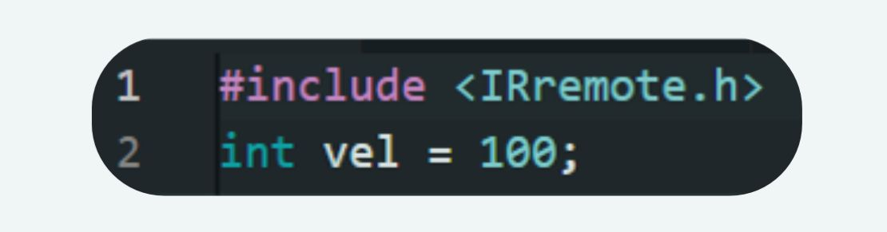
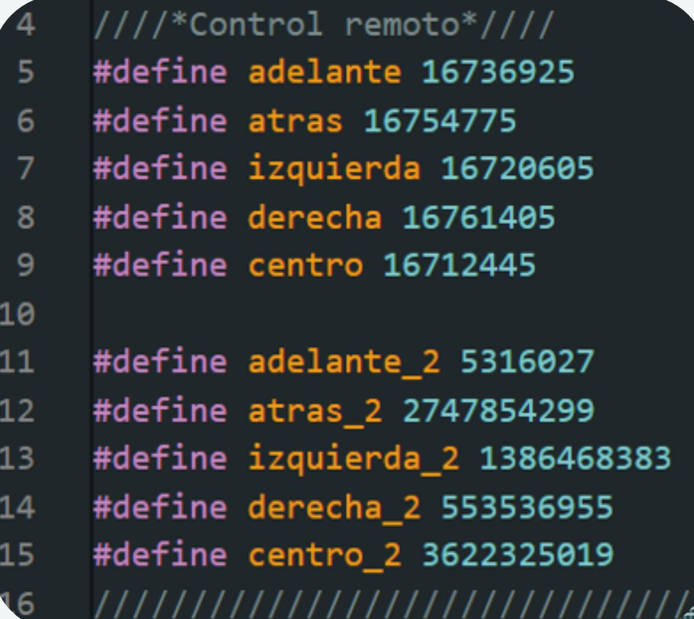
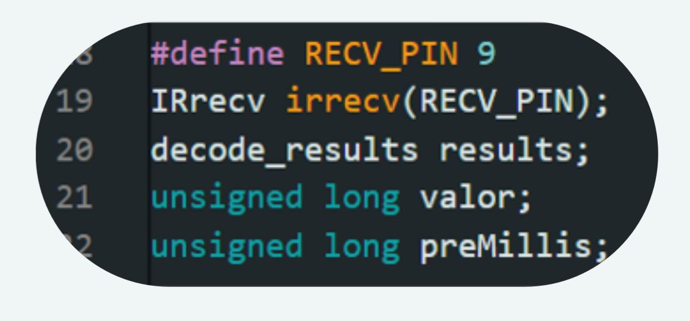
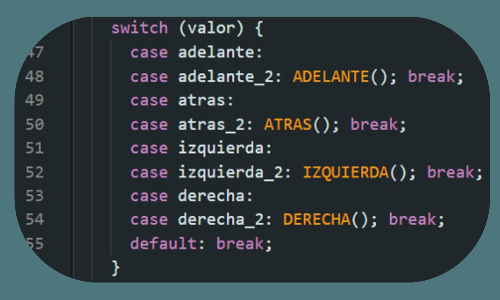
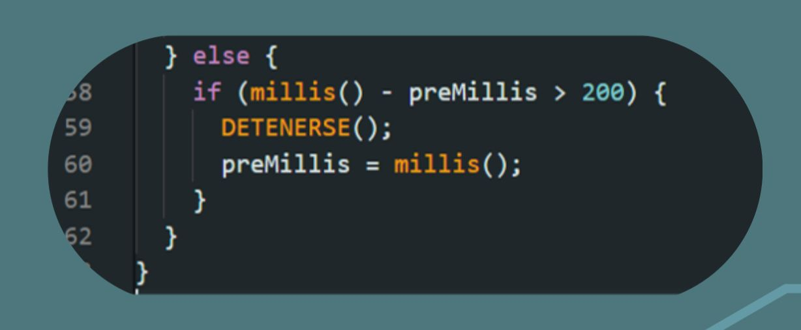
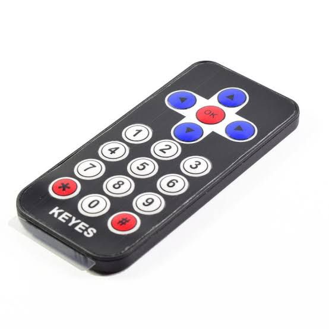

Teoría: El llamado mando a distancia controla diferentes dispositivos electrónicos y eléctricos para que realicen ciertas acciones.
La luz emitida por el control es infrarroja, una frecuencia que esta debajo de la sensibilidad de nuestros ojos y es imperceptible.
Nosotros usaremos un control con menor alcance (10m) con una luz infrarroja (luz que trabaja a una frecuencia menor a la que nuestros ojos pueden ver).
Reto: Mover el robot BEETBOT con el control remoto para realizar una comunicación por infrarrojo y así poder decirle al robot a distancia que se mueva hacia adelante,
atrás, derecha e izquierda.
Código:
IRremote La librería IRremote es una herramienta que permite la recepción de señales infrarrojas, por lo cual la ocuparemos.

Para empezar añadimos la librería para poder comunicarnos con nuestro control remoto

Condiciones nuevas: Los botones de dirección de nuestro control tienen un número identificador para saber cuál se presionó.
Se presentan dos opciones para mejorar el uso del control, posteriormente activaremos el pin del receptor IR.

Cada línea define un código IR (de infrarrojo) que representa un botón específico del control remoto.
Cuando tú presionas un botón como “adelante” en el control, el receptor capta un número, y ese número es lo que el Arduino usa para saber qué acción debe ejecutar.
- #define es una orden para darle un nombre al número, así es más fácil usarlo en el programa.
- Se definen dos series de códigos (adelante y adelante_2) por si se usa otro control o si el control tiene modos distintos.

- #define RECV_PIN 9: El sensor infrarrojo va conectado al pin digital 9 del Arduino.
- IRrecv irrecv(...): Se crea un objeto llamado irrecv que recibe las señales del control.
- decode_results results: Variable donde se guardan los datos del botón presionado.
- valor: Guardará el número exacto que manda el control.
- preMillis: Se usará para medir el tiempo transcurrido, útil para seguridad o pausas.
Condición Switch (case): Esta decide que acción debe hacer el robot al detectar el código del infrarrojo.

Este bloque es un “menú de decisiones”. El Arduino revisa el valor recibido del control, y según el código que sea, ejecuta la función correspondiente:
- Si el valor es igual a adelante o adelante_2, se llama la función ADELANTE()
- Si es igual a atras o atras_2, se ejecuta ATRAS()
- Lo mismo con IZQUIERDA(), DERECHA(), etc.
Cada función (ADELANTE(), ATRAS(), etc.) contiene las instrucciones que hacen que el robot se mueva en esa dirección.

Esta parte del código, evita que el robot siga moviéndose si no se recibe otro comando en 200 milisegundos.
- millis() cuenta el tiempo en milisegundos desde que se encendió el Arduino.
- Si pasan más de 200 ms sin una nueva señal → ejecuta DETENERSE()
- Después, actualiza preMillis al tiempo actual.
Funcionamiento del Control Infrarrojo KEYES : Con este control se envían comandos al robot mediante señales infrarrojas. Cada botón tiene un código único que el Arduino reconoce para ejecutar una acción, como se mencionaba anteriormente:

- Flecha arriba → Avanza (ADELANTE())
- Flecha abajo → Retrocede (ATRAS())
- Izquierda → Gira a la izquierda (IZQUIERDA())
- Derecha → Gira a la derecha (DERECHA())